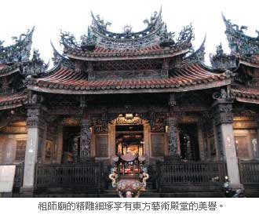

三峽祖師廟 初六殺豬公
黃莞皓｜聯合報／初一特刊．封面故事∣2012年1月23日
新春祈福好運到！大年初一就到全台最熱門的「三峽清水祖師廟」拜拜求平安吧！從搶頭香開始一直到元宵節的系列活動，祖師廟都人聲鼎沸、熱鬧非凡。祖師廟的總務組長劉金達說：「來這裡求身體健康、平安，特別靈驗，而且今年廟方還特別推出祖師廟3D福袋，送完為止」。
三峽祖師廟從西元1769年創建到現在已經有超過200年的歷史，1947年第三次重建時特別請來三峽在地藝術家李梅樹設計殿內雕刻、浮雕和石刻，每一根柱子都呈現不同風貌，可以說是鬼斧神工，三峽祖師廟甚至有「東方藝術殿堂」之稱。
劉金達說，初一開始就會有許多民眾到祖師廟來祈福、安太歲、拿紅包，初六則是一年一度的重頭戲「殺豬公」，早上8點開始廟方就會載著神豬在三峽遶境，接著就在廟前舉行祈福法會，「殺豬公」是祖師廟一大盛事，大神豬每年都讓遊客大開眼界。
劉金達特別提醒民眾，按照傳統習俗，屬龍、狗和兔的民眾，都是今年需要安太歲的生肖，要幫家裡的爸媽、孩子安太歲可以帶著生辰八字到廟裡申請。
地址：新北市三峽鎮長福街1號
電話：02-2671-1031
開車：走台三線即可到達，或走北二高下三鶯交流道往三峽方向行走，沿途皆有指標。
公車：1.搭捷運土城線在永寧站下車，轉搭台北客運藍43線台北客運或首都客運916線在三峽站下車。
2.搭捷運板南線在新埔站下車，轉搭台北客運910線在三峽站下車。